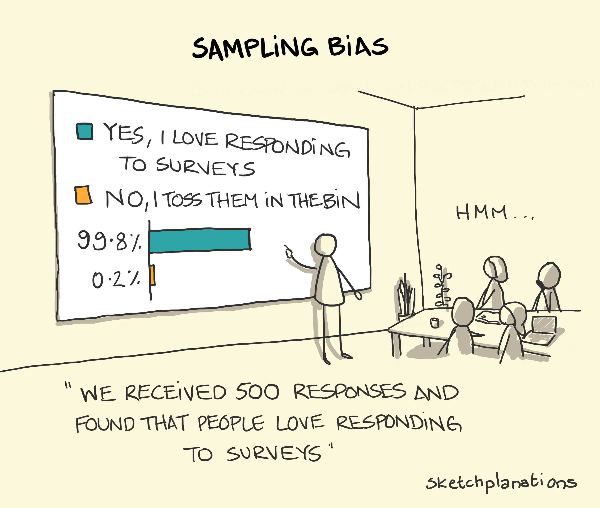
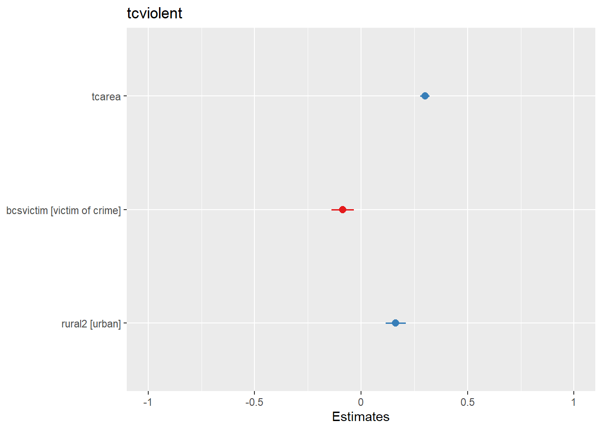

Chapter 9 Statistical Inference
9.1 Introduction
When conducting data analysis, we usually need to analyse data from a sample. Very rarely do we have access do population-level data. In most cases, we only have access to sample data. For example, the Crime Survey for England and Wales does not survey every single resident of the UK. Instead, it surveys a limited number of residents who are supposed to represent the entire population. This limited number of residents is a sample. Yet, we are only interested in information from this sample as long as they can be considered a representative sample—i.e., as long as we can generalise information from a sample to a population.
Think of it this way: suppose you are cooking tomato sauce in a large pan and want to check if you have added enough salt. You do not need to eat the entire pan to find out; instead, you take a small spoonful and, based on its taste, draw conclusions about the whole sauce. This approach only works if that small spoonful is truly representative of the entire pan. In this analogy, the spoonful is a sample, while the full pan of sauce represents the population. Similarly, when we analyse data from sources like the Crime Survey for England and Wales, we rely on survey respondents (the sample) to make inferences about the entire population of England and Wales. The sample is valuable only to the extent that it accurately represents the population, allowing us to draw meaningful conclusions about the population.
How do we do that? This is where statistical inference comes in. Statistical inference allows us to use information from a sample to draw conclusions about a population—just like deciding whether the tomato sauce needs more salt based on a small spoonful or estimating the proportion of UK residents who have experienced violent crime using data from the CSEW. Whenever we work with a sample but aim to make conclusions about a population, we rely on statistical inference. These tools help us account for and model the uncertainty in our estimates. Even when we have full population data—such as all police-recorded crimes in a given area—statistical inference remains essential for handling uncertainty and making robust conclusions.
Up to now we have introduced a series of concepts and tools that are helpful to describe sample data. Today we are going to revisit those concepts and tools and learn how use them from a statistical inference point of view. In particular, we will approach this topic from the frequentist tradition.
It is important you understand this is not the only way of doing data analysis. There is an alternative approach, Bayesian statistics, which is very important and increasingly popular. Unfortunately, we do not have the time this semester to also cover Bayesian statistics. Typically, you would learn about this approach in more advanced courses.
We have two main subsections today: Brief theoretical overview and Statistical inference in practice. Unlike in previous sessions, the focus of the first subsection will be less applied and a bit more theoretical. However, it is important you pay attention, since understanding the foundations of statistical inference is essential for a proper understanding of everything else we have discussed in this course. The code we cover in the first subsection is a bit trickier but won’t be instrumental for your assignment, so don’t worry too much if you don’t fully understand it—it’s just there to help you understand some of the key concepts. In the second subsection, we will revisit some of the analyses we have done in previous weeks—calculating means and proportions, estimating linear regression models, multiple linear regression models, and logistic regression models—but now looking at how these analytic strategies allow us to make conclusions about the population.
9.2 Brief theoretical overview
Let’s begin with some conceptual clarification. In most data analysis exercises, we distinguish between a sample and a population. The key assumption here is that we want to draw conclusions about the population, but we do not have data on every observation within it. For instance, if we wanted to predict how prospective voters would cast their ballots in an upcoming election, surveying every voter would be impractical—it would be as costly and time-consuming as conducting the actual election. Instead, we rely on samples: a subset of units from the population. We select this subset of units with the goal of representing the whole population.
Your turn! In the statements below, identify the targeted population and the analytic sample:
- Blood Test – A doctor takes a small vial of blood from a patient to check their overall health
Reveal answer!
- Population: All the blood in the patient’s body
- Sample: The small vial of blood taken for testing
- Taste-Testing Coffee – A barista takes a small sip from a freshly brewed coffee to determine if it has the right balance of flavours.
Reveal answer!
- Population: The entire cup of coffee
- Sample: The sip taken for testing
- Election Polling – A research firm surveys 2,000 registered voters to estimate the percentage of people who support a particular candidate.
Reveal answer!
- Population: All registered voters
- Sample: The 2,000 voters surveyed
- Student Satisfaction Survey – A university wants to assess student satisfaction, so it surveys 10% of its undergraduate students.
Reveal answer!
- Population: All undergraduate students at the university
- Sample: The 10% of students surveyed
- Crime Victimisation Survey – The Crime Survey for England and Wales (CSEW) interviews 35,000 individuals to estimate the national rate of victimisation.
Reveal answer!
- Population: All residents of England and Wales
- Sample: The 35,000 survey respondents
- Drug Effectiveness Trial – A pharmaceutical company tests a new drug on 1,000 patients to evaluate its effectiveness before public approval.
Reveal answer!
- Population: All patients who could potentially use the drug
- Sample: The 1,000 patients in the clinical trial
- Air Quality Monitoring – Researchers place air quality sensors in 100 locations across a city to estimate overall pollution levels.
Reveal answer!
- Population: All air in the city
- Sample: The air quality measurements from the 100 locations
- Police Use of Force Analysis – A study reviews body-worn camera footage from 100 police stops to assess patterns of force used by officers.
Reveal answer!
- Population: All police stops in the jurisdiction
- Sample: The 100 police stops analysed
The big question, then, is: how confident can we be that our sample truly represents the population? After all, the small vial of blood taken for testing may not accurately reflect the overall health of the patient, the 1,000 patients in a clinical trial could could happen to be unusually sensitive to the drug, or the 100 police stops analysed might all involve exceptionally aggressive encounters. In other words, the sample could be significantly different from the population.
We address this challenge with one of the most powerful tools in statistics: randomisation. As long as we have a random sample (aka ‘probability samples’), we can use statistical inference tools to assess how confident we can be when drawing conclusions about the population. A truly random sample means that every unit in the population has the same probability of being selected into the sample. For example, in the cases above: every student at the university should have an equal chance of being chosen for the student satisfaction survey; every resident of England and Wales should be equally likely to be interviewed by the CSEW team; and every police stop in the jurisdiction should have the same probability of being included in the sample of 100 stops analysed.
Not all analytic samples are random samples. Sometimes, researchers must rely on convenience samples (or non-probability samples), where selection into the sample is not random. This typically happens when reaching the target population is challenging or when participating in the research is costly. For example, student satisfaction surveys often rely on convenience samples: everyone is invited to participate, but only a subset of students actually respond—i.e., a subset self-selects into the sample. Surveys involving police officers also tend to use convenience samples, as only a subset of officers may be willing to participate in research. When working with convenience samples, it is crucial to remember that they are susceptible to selection bias (or sampling bias). More importantly, statistical inference tools cannot be used with data drawn from convenience samples, as they do not provide a representative snapshot of the population.

From now on, let’s assume we are working with probability samples—samples that have been collected through random selection of units.
Sampling distribution & Central limit theorem
Okay, this makes sense. If we have a random sample, we can apply statistical inference tools that allow us to assess how confident we can be at drawing conclusions about the population. Now, let’s have a closer look at statistical inference.
The first thing to note is that different random samples can be obtained from the same population. Let’s use the CSEW as an example. From the population of people aged 16 and over living in England and Wales (more than 45 million people, according to the ONS), we want to draw a sample of 35,000 individuals. How many different combinations of 35,000 individuals could we select from a population of over 45 million? The answer is… a lot. There are so many possible combinations that we can say there are virtually infinite possibilities. In fact, there are infinite possible random samples that could be drawn from this population. So, what ensures that our sample—or any of these infinite possible samples—is actually representative of the population?
In reality, even though there are infinite possible samples, only a single random simple will be drawn from the population—e.g., there is only a single annual CSEW sample.
Let’s take a closer look at this idea. To help us better understand some of the theoretical concepts we’re introducing this week, we will generate some fictitious data. We will use R to create this data, which we will treat as the population data. This is artificial because, in reality, we never have access to complete population-level data. From this fictitious population, we will then draw a number of random samples. Again, this is artificial because, in practice, we only have a single sample that is supposed to represent the population.
Important: this analysis is not something we typically perform in regular data analysis workflows, nor is it something you will be required to do for your final coursework. It’s simply designed to help us better understand some concepts related to statistical inference.
Let’s start by creating this fictional dataset with 100,000 observations and treat it as our fake population. We can do this using the rnbinom() function, which will randomly generate a variable following a skewed distribution (the technical term is a negative binomial distribution, which is a discrete probability distribution). This is useful because we often work with severely skewed data in criminology. Because the rnbinom() function randomly generates a dataset, we would get a slightly different distribution every time we run the code; so, to ensure that we all get exactly the same results, we can use the set.seed() function—if we all set the same “seed”, we’ll get the same randomly generated distribution.
# set seed to ensure we all have the same results
set.seed(100)
# generate a fictional dataset with 100,000 observations
fake_population <- rnbinom(100000, mu = 1, size = 0.15) The code above creates data that follow a negative binomial distribution, essentially a highly skewed distribution. Don’t worry too much about the other parameters we are using as arguments at this stage, but if curious look at ?rnbinom.
We can also summarise and get the standard deviation for this object using the summary() and sd() functions, respectively:
## Min. 1st Qu. Median Mean 3rd Qu. Max.
## 0.0000 0.0000 0.0000 0.9873 1.0000 65.0000## [1] 2.744007So, we can see that this generated variable, which we are treating as the population, ranges from 0 to 65, with a standard deviation of 2.74. The average score is 0.99. Let’s remember this number.
We can also see what the shape of the distribution looks like:
# load the ggplot2 package
library(ggplot2)
# plot the histogram of the generated distribution
qplot(fake_population)
To make our lives a bit easier, let’s pretend this object contains population-level information on whether individuals have previously engaged in offending behaviour in the previous year. So, this is a population of 100,000 individuals, and the distribution indicates how many offences each of these individuals have committed. As expected, the majority of the population has committed 0 crimes, whereas some individuals have engaged in one or more criminal behaviours. Let’s see how many offenders we have in this fake population.
## [1] 2607826078 individuals have committed at least one crime in the previous year. That implies 26.08% of the population. Let’s remember this number too.
We are now going to put this variable in a data.frame object. We are also going to create a new categorical variable identifying whether someone offended over the past year (e.g., anybody with a count of crime higher than 0). Let’s start by creating a new data frame (fake_population) with the skewed variable we created rebaptised as crimecount.
Then let’s define all values above 0 as “Yes” in a variable identifying offenders and everybody else as “No”. We use the mutate and the case_when() functions from the dplyr package for this.
# load the dplyr package
library(dplyr)
# create new variable called "offender" that indicates whether each
# respondent has committed at least one crime in the previous year
fake_population <- mutate(fake_population, offender = case_when(crimecount > 0 ~ "Yes",
crimecount == 0 ~ "No"))
# Let's check the results
table(fake_population$offender)##
## No Yes
## 73922 26078Good. So, we have a population in which 26.08% of the individuals have committed at least one offence in the previous year and the average number of offences committed by each individual is 0.99.
However, as mentioned before, we never have access to population-level data. We only have access to samples—and we use sample-level information to draw conclusions about the population. So, let’s R to generate random samples from the fake_population population. We can then compare our sample means with the population mean! They should be similar, right?
Let’s start creating a probability sample of 1000 observations randomly obtained from the fake_population dataset. Note that we need the sample() function from the mosaic package.
# install the 'mosaic' package if you haven't yet
## install.packages("mosaic")
# load the 'mosaic' package
library(mosaic)
# obtain a random sample with 1000 observations from the fake_population object
fake_sample_1 <- mosaic::sample(fake_population, 1000)We have a new dataset called fake_sample_1 in our environment now. It has 1000 observations and 3 columns. Do note the fake_sample_1 object has an additional column named orig.id, which indicates the row number of the sampled observation in the original fake_population object.
For starters, let’s check the average number of offences sampled individuals have committed. We expect it to be similar to the population mean of 0.99.
# check the sample mean of the variable 'crimecount' in the fake_sample_1 dataset
mean(fake_sample_1$crimecount)## [1] 0.99It is almost identical to the population mean! That’s great. Now let’s check the proportion of individuals who have committed at least one offence. We expect it to be similar to the population proportion of 26.08%.
# check the sample proportion of the variable 'offender' in the fake_sample_1 dataset
table(fake_sample_1$offender) %>% prop.table()##
## No Yes
## 0.734 0.266Again, very similar to the population proportion!
But hang on. That was just one possible random sample drawn from the population. As we mentioned earlier, there are infinite possible random sample that could be drawn from the same population. Is it possible that a different sample would have different estimates?
Let’s generate more samples and check their estimates.
# obtain several random samples with 1000 observations each from the fake_population object
fake_sample_2 <- mosaic::sample(fake_population, 1000)
fake_sample_3 <- mosaic::sample(fake_population, 1000)
fake_sample_4 <- mosaic::sample(fake_population, 1000)
fake_sample_5 <- mosaic::sample(fake_population, 1000)
fake_sample_6 <- mosaic::sample(fake_population, 1000)
fake_sample_7 <- mosaic::sample(fake_population, 1000)
fake_sample_8 <- mosaic::sample(fake_population, 1000)
fake_sample_9 <- mosaic::sample(fake_population, 1000)
fake_sample_10 <- mosaic::sample(fake_population, 1000)
# print the sample means of the variable 'crimecounts' across all ten samples
purrr::map_dbl(list(fake_sample_1, fake_sample_2, fake_sample_3, fake_sample_4, fake_sample_5,
fake_sample_6, fake_sample_7, fake_sample_8, fake_sample_9, fake_sample_10),
~ mean(.x$crimecount, na.rm = T))## [1] 0.990 0.983 1.025 0.879 1.103 0.996 1.012 0.991 0.994 0.893As we can see, not all sample means are exactly the same. Some of them are very similar to the population mean, like fake_sample_1 and fake_sample_2, whereas other are slightly more different, such as fake_sample_3 and fake_sample_4.
Your exact results may differ from those shown here, but you can surely see the point. We may have a problem with using sample means as a guess for the population mean. Your guesses (or estimates, or guesstimates) will vary. How much of a problem is this? This excellent piece and demonstration by New York Times reporters illustrate the problem well. We are going to learn that something called the central limit theorem is of great assistance here.
Say we decided to draw more samples from the same population. Instead of just 10 samples, we decide to draw hundreds, or maybe thousands of samples. In reality, there are infinite possible random samples, but let’s say we were able to draw all of them—every single random sample (with the same sample size, in our case, \(n = 1000\)) from the population. The distribution of all possible random samples obtained from the population is called sampling distribution. It is the distribution of the statistic for all possible samples from the same population of a given size.
This is a very abstract concept… but let’s try to make sense of it. Let’s generate 50,000 samples (of size \(n=1000\), as before) instead of just 10 as before. Then, for each one of those 50,000 samples, we compute the sample mean indicating the average number of offences individuals have committed. This strategy is called a sampling experiment.
This is computationally intensive (after all, we’re obtaining 50,000 random samples from the fake population!)—so may take a bit. Wait until you see the object appear in your environment.
# generate 50,000 random samples from the fake_population object and
# compute the mean of 'crimecount'
samples_50k_crimecount <- do(50000) * with(sample(fake_population, 1000), mean(crimecount))So now we have 50,000 sample means from samples of size 1000 taken from our fake population. Let’s visually explore the distribution of the sample means.
# Plot the distribution of 50,000 sample means
qplot(samples_50k_crimecount$with, xlab = "Distribution of means from samples of size 1000")
The sampling distribution follows a normal distribution! When you (1) take many random samples from a variable; (2) compute the means for each of these samples; and (3) plot the means of each of these samples, you end up with something (i.e., the sampling distribution) that is also normally distributed. And what is the mean of the sampling distribution—i.e., if we analyse the means obtained from each one of the 50,000 samples we generated and computed their overall mean, what would it be? Let’s check it:
## [1] 0.9872288Wait a minute, we remember this number! This exactly the same as the population mean, isn’t it?
## [1] 0.98726Wow! What we have observed is part of something called the central limit theorem, a concept from probability theory. One of the first things that the central limit theorem tells us is that the mean of the sampling distribution of the means should equal the mean of the population.
The beauty of it is that, if the sampling distribution (i) is a normal distribution and (ii) has a mean that is the same as the population mean, we can use properties about the normal distribution to help us link data obtained from a random sample to the underlying population—allowing us to make statistical inference! What’s even more impressive is that the original variable does not need to be normally distributed. Our variable today, crimecount, follows a highly skewed distribution (in the population and in each random sample); and yet, the sampling distribution of the several means of crimecount obtained from several samples is normally distributed.
But which properties of the normal distribution are we talking about? The true normal distribution has known properties that we can now use. For example, we know that 68% of the entire distribution is within 1 standard deviation from the mean, we know that 95.5% of the distribution is 2 standard deviations away from the mean, and that 99.7% of the distribution is 3 standard deviations away from the mean.
Why is that relevant? Because, in practice, we only have one random sample aimed to represent the population. We don’t know if any given simple is similar or not to the population, as some samples might more or less close to the population parameters. The variation across all samples—i.e., the standard deviation of the sampling distribution—we call that standard error. Because the sampling distribution follows a normal distribution, we do know that 68% of all possible samples are within one standard error from the population mean, that 95.5% of all possible samples are within 2 standard errors from the population mean, and that 99.7% of all possible samples are within 3 standard deviations from the population mean.

In other words, it is extremely rare that a random sample would yield sample means (i.e., estimates) that are too different from the population mean. How rare? That depends on our confidence level. In social sciences, we typically choose 95% confidence level as the standard threshold for evidence. Looking at the theoretical standard normal distribution, we know that about 95% of the cases fall within 2 standard deviations on either side of the mean. Therefore, we know then that about 95% of the sample means (95.46% to be more precise) will fall within two standard errors of the population mean (i.e., the mean of the sampling distribution). So, we can say that the margin of error, the largest likely estimation error, equals 2 standard errors. More accurately, the margin of error equals 1.96 standard errors (1.96 corresponds to 95% whereas the value 2 corresponds to 95.46%).
If you want to further consolidate some of these concepts you may find these videos on sampling distributions from Khan Academy useful.
Statistical inference: confidence intervals
Now, let’s take a closer look at this idea of standard errors. If the standard error is the standard deviation of the sampling distribution, in the case of our sampling experiment, we can simply compute the standard deviation of the samples_50k_crimcount object. (Note: usually, the standard error needs to be guessed/estimated as well, as in practice we only have data from a single sample).
## [1] 0.08585455The standard error was 0.09. If we multiply 0.09 by 1.96, we obtain `r 0.17. This means that 95% of the samples in this sampling distribution will have an error that won’t be bigger than that. They will only at most differ from the mean of the sampling distribution by (plus and minus) 0.17. However, 5% of the samples will have a margin of error bigger than that (in absolute terms).
The wonderful thing is that we can use the margin of error to provide information about the degree to which our sample estimate may vary from the population mean. We can use it to give a measure of the uncertainty in our estimation. How?
“We rely on this obvious relation: If M (our sample mean) is likely to be close to μ (the population mean)—as the last page or two has illustrated—then μ is likely to be close to M. As simple as that. The simulation shows us that, for most samples, M (the sample mean) falls pretty close to μ (the population mean), in fact within margin of error of μ. Now, we have only a single M and don’t know μ. But, unless we’ve been unlucky, our M has fallen within the margin of error of μ, and so, if we mark out an interval extending the margin of error on either side of our, most likely we’ve included μ. Indeed, and that interval is the confidence interval (CI)” (Cumming, 2012: 69).
If we have a large random sample, the 95% confidence interval will then be:
- Upper limit: sample mean \(+ 1.96*\) standard error
- Lower limit: sample mean \(- 1.96*\) standard error
This will be clearer with a complete example. Let’s have a look at fake_sample_4, a random sample of 1000 observations drawn from the fake_population. (Feel free to try this with other samples!).
## [1] 0.879The mean of crimecount in fake_sample_4 is 0.88. In this case, we know that this is slightly different but still fairly close to the population mean of NA, but in real-life scenarios we only see the sample mean—never the population mean.
So, we can estimate the confidence interval. Because we want the 95% confidence interval, we define the interval as a range \(1.96 *\) the standard error below and above our sample mean of 0.88. Given that the standard error in this case is 0.17, the lower bound of the 95% confidence interval is simply 0.88 \(- 1.96 *\) 0.09 \(=\) 0.55, whereas the upper bound of the 95% confidence interval is 0.88 \(+ 1.96 *\) 0.09 \(=\) 1.21.
What does this mean? Simply that we are 95% confident that the population mean is within the \([\) 0.55; 1.21 \(]\) range. More specifically, 95% of all confidence intervals (i.e., from all possible samples, the sampling distribution) will contain the population mean and 5% will miss it.
If we know the population mean, then we can see whether a sample confidence interval overlaps with the population mean. But in real life we run samples precisely because we don’t know the population parameters. So, unfortunately, when you do a sample you can never be sure whether your estimated confidence interval is one of the rare unlucky ones that miss it.
The truth is we will never know whether our confidence interval captures the population parameter or not, we can only say that under certain assumptions if we had repeated the procedure many times it will include it 95% of the time. It is important not to get confused about it. We cannot never know in real life applications if our confidence interval actually covers the population mean. This is one of the reasons why in statistics when making inferences we cannot provide definitive answers,11 there is always an element of uncertainty that is part of any scientific endeavour—and which goes along way towards explaining why we need to replicate studies, to see if theirs findings hold.
It is generally considered better practice to report your confidence intervals than your point estimates. Why?
- First, because you are being explicit about the fact you are just guessing. Point estimates such as the sample mean create a false impression of precision.
- But beware the CI can also be misleading! 95% of the times you may get the true parameter, but that’s not the same than to say that 95% of the time your mean will lie between your upper and lower boundaries for your confidence interval. This is a common interpretative mistake made by researchers and, even, teachers. Do not make it yourself!!! A confidence interval can only be used to evaluate the procedure not a specific estimated interval.
So to reiterate:
- INCORRECT INTERPRETATION: “There is a 95% chance that the average number of offences is between 0.55 and 1.21”. This is a very common misconception! It seems very close to true, but it isn’t because the population mean value is fixed. So, it is either in the interval or not and you can’t possibly know whether that is the case. This is subtle but important.
- What is correct? 95% of the time, when we calculate a confidence interval in this way, the true mean will be between the two values. 5% of the time, it will not. Because the true mean (population mean) is an unknown value, we don’t know if we are in the 5% or the 95%. BUT 95% is pretty good. This is the only correct interpretation of our confidence interval, so do not take it any other as valid.
- Is is not terrible to say something like “We are 95% confident that the average number of offences is between 0.55 and 1.21.” This is a common shorthand for the idea that the calculations “work” 95% of the time.
- Remember that we can’t have a 100% confidence interval. By definition, the population mean is not known. If we could calculate it exactly we would! But that would mean that we need a census of our population with is often not possible or feasible.
- Finally, because if the range of values that you give me for your CI is smaller or bigger I will know that your estimate is more or less precise respectively. That is, with the CI you are giving me a measure of your uncertainty. The bigger the CI the more uncertain we are about the true population parameter.
Statistical inference: hypothesis testing
Remember when started talking about null hypotheses in Week 5? We said that, in bivariate (or multivariate) analysis, we always start with a null hypothesis that assumes no relationship between the independent and the dependent variables. Then we conduct data analysis to collect evidence for or against the null hypothesis. We didn’t mention it at the time, but that was actually actually about statistical inference!
The null hypothesis is always a statement about the population. The statement is that there is no relationship between the independent and the dependent variables in the population. Then we conduct a statistical test, using statistical inference tools, that providence evidence indicating whether we can or cannot reject the null hypothesis—thus using data from a sample to make conclusions about the population.
More specifically, the null hypothesis always states that the estimated statistic measuring the association (e.g., the mean difference, the slope coefficient, etc.) is 0 in the population. The alternative hypothesis then states that that statistic is not 0 in the population. The evidence produced by statistical tests that allow us to reject, or not, the null hypothesis is based on statistical inference:
Confidence intervals. For every statistic we estimate, we will always estimate a corresponding standard error. We can then use that standard error to compute confidence intervals—e.g., the 95% confidence interval, as we did above: the lower bound of the 95% confidence interval would be given by the estimated statistic \(- 1.96 *\) the standard error, whereas the upper bound of the 95% confidence interval would be given by the estimated statistic \(+ 1.96 *\) the standard error. As long as the 95% confidence interval does not cross 0, we can reject the null hypothesis with 95% confidence and conclude that the estimated association is statistically significant (i.e., likely to be true in the population).
p-values. So in essence we are after a probability, specifically a conditional probability (i.e, the probability of our data if the null hypothesis were true). We are trying to quantify the probability of seeing data like the one we have observed if we take as given that the null hypothesis is true (and the value “should be” zero). We call this probability the p-value. You may have heard this term before. All it means, it bears repeating, is the probability of observing our data if the null hypothesis were true.
“When the p value is high, then we can conclude that we have not seeing anything unusual. Events that have a high probability of happening happen often. The data are thus consistent with the model from the null hypothesis, and we have no reason to reject the null hypothesis. But we realize many other similar hypotheses could also account for the data we’ve seen, so we haven’t proven that the null hypothesis is true. The most we can say is that it doesn’t appear to be false. Formally, we fail to reject the null hypothesis. That’s a pretty weak conclusion, but it’s all we’re entitled to. When the p value is low enough, it says that it’s very unlikely we’d observed data like these if our null hypothesis were true. We started with a model. Now the model tells us that the data are unlikely to have happened. The model and the data are at odds with each other, so we have to make a choice. Either the null hypothesis is correct and we’ve just seen something remarkable, or the null hypothesis is wrong…” (De Veaux et al. 2012: 480)
When is a p value high and when is low? Typically, we use criteria similar to those we use when constructing confidence intervals: we would consider a p value low enough if 95% of the time the observed data was considered to be inconsistent with the model proposed by our null hypothesis. So, we look for p values that are smaller or bigger than 0.05. However, there is nothing sacrosanct about 95% and you could have good reasons to depart from this criterion (read page 123 to 128 of Weisburd and Britt, 2010 for further details). You will see that statistics books refer to the threshold we use to define a p value as high or low as our level of statistical significance (also often referred to as the alpha level). In our example here we will use an alpha level of 0.05. That is, we will reject the null hypothesis only if our p level is below that threshold.
Both approaches are complementary and provide consistent information. If a given p-value is below 0.05, then the 95% confidence interval does not cross zero. If you are using, say, the 1% significance level (in which case, the null hypothesis can be rejected if \(p<0.01\)), then you should estimate the 99% confidence interval; and so on.
The ultimate goal of statistical tests for hypothesis testing is to obtain a p value: the probability that the observed statistic (or a more extreme value) occurs if the null model is correct. If the p value is small enough (smaller than our alpha level: such as 0.05) then we will “reject the null hypothesis”. If it is not, we will “fail to reject the null hypothesis”. The language is important.
Whatever you decide, the American Psychological Association Statistical Committee recommends that it is always a good idea to report the p value as an indication of the strength of the evidence. That is, not only report the finding to be significant or not, also report your actual p value.
One final word. P values have attracted a lot of debate over the years. They are often misunderstood and people often read too much into them. They have also been used in a too simplistic way as a yardstic to decide what research findings are “worthy”. It is important to know what they are and how they work. It is particularly important not to overinterpret them either. The term statistical significance is particularly misleading because in common usage we think of something significant as important. But in our context is basically equivalent to say that we have observed in our sample/study may not be noise. That’s it. You will find all sorts of reactions to p values. Some people think we should ban them and use alternative approaches to data analysis (like Bayesian statistics). Others think that we should use more stringent thresholds (like p values below .01 or .001). Yet most scientists still rely on them, so it is important that you learn what they are, their limitations, and how to interpret them in a correct manner.
9.3 Statistical inference in practice
You may have spotted a big problem in what came before. How did we compute the confidence interval? We multiplied 1.96 times the standard error. Remember: the standard error is the standard deviation of the sampling distribution of the mean. And… well, unless you are willing to repeat a survey thousands and thousands of times with the same population, you won’t know what the standard error is! The population mean is unknown and we want to estimate it. But the standard error that we need for constructing our confidence interval is also unknown!
If you are working with proportions there is an easier way to estimate the standard error only with sample data (for details see the required reading). But with means this is not possible. There is, however, a solution. You can use the standard deviation of your sample as an estimate for the standard error. You would also need to make some adjustments to the formula for the confidence interval (you divide the sample standard deviation by the square root of the sample size). You don’t need to worry to much about the mathematics of it! In practice here we will rely on R to apply these formulas and compute the confidence intervals.
It is important, though, that you know that this approach works reasonably well when applying the Normal probability model to large samples. But with small samples using the sample standard deviation as an estimate of the standard error (so that we can compute the confidence interval) is problematic. The sample standard deviation also varies from sample to sample and this extra variation in smaller samples will mess up the computation of the margin of errors. William Gosset’s suggested we needed to use a different probability distribution for this cases, the t Student distribution.
You can learn more about this distribution and the work of Gosset in the suggested reading. The t-Student distribution and the normal distribution are almost indistinguishable for large samples. In essence that means you will still multiply by 1.96. But with smaller sample sizes that value will be different if you use a normal distribution or a t student distribution. Refer to the recommended textbooks for further clarification.
It is fairly straightforward to get the confidence intervals using R. In order to use the t-Student distribution we need to assume the data were randomly sampled and that the population distribution is unimodal and symmetric.
In the following subsections, we are going to rely on data from the Crime Survey for England and Wales 2007-08 and revisit everything we studied this semester applying statistical inference tools. Let’s start loading the data:
# load readr package
library(readr)
# import the data using read_csv() function
csew_0708 <- read_csv("https://raw.githubusercontent.com/uom-resquant/modelling_book/refs/heads/master/datasets/BCS0708.csv")As we know, this is a representative sample of people aged 16 or older living in England and Wales. While we are analysing data from this sample, what we really care about is the population. Therefore, we can use sample-level data to make population-level conclusions.
Means and proportions
As we did a few weeks ago, let’s start looking at the variable tcviolent, which measures fear of violent crime.
## Min. 1st Qu. Median Mean 3rd Qu. Max. NA's
## -2.350 -0.672 -0.117 0.046 0.540 3.805 3242This is an index indicating how fearful of violent crime each individual is. The lowest score in the scale is -2.35, indicating no fear of violent crime whatsoever, and the highest score is 3.81, reflecting very high levels of fear of violent of crime.
The average score is 0.05. Now, this is when things get interesting… 0.05 is the sample mean. We don’t know what the population mean is! Yet, that’s our target, that’s the number we actually want to know. Because we don’t know, we can only guess. And the best, most educated guess we can have is the sample mean. Therefore, we treat the sample mean as our estimate (i.e., best guess) of the population mean.
Still, we could be wrong. The CSEW sample is just one out of infinite possible samples drawn from the population aged 16 or older living in England and Wales. While we know that most samples will do a good job in estimating the population mean, some will be relatively off. Therefore, rather than simply using our point estimate—i.e., rather than simply saying that the population mean is exactly 0.05, we can model the uncertainty and compute a confidence interval around our estimate. Following standard conventions, we can compute a 95% confidence interval.
To do that, we simply use the t.test() function in R.
##
## One Sample t-test
##
## data: csew_0708$tcviolent
## t = 4.1679, df = 8433, p-value = 3.104e-05
## alternative hypothesis: true mean is not equal to 0
## 95 percent confidence interval:
## 0.02414414 0.06702001
## sample estimates:
## mean of x
## 0.04558207Let’s have a closer look at this output. To make our lives easier, let’s analyse the output bottom-up.
- First, under “sample estimates”, we have the expression “mean of x” indicating sample mean of the variable
tcviolent, which is 0.05, as we already knew. - Above that, under “95 percent confidence interval”, we have two numbers. They the lower bound and the upper bound of the 95% confidence interval, respectively. Therefore, the 95% confidence interval is \([\) 0.02 ; 0.07 \(]\).
So, we can say that we are 95% confident that the population mean is somewhere within the \([\) 0.02 ; 0.07 \(]\) range. More accurately, we can conclude that, if we were able to draw several other random samples from the population aged 16 or older in England and Wales, 95% of those samples will yield sample estimates between 0.02 and 0.07.
From a hypothesis testing point of view, the null hypothesis here is that the population mean is 0. Given that the confidence interval does not cross 0, we can reject this null hypothesis with a 95% confidence level. This is not a meaningful null hypothesis.
We can also look at the first row of the output.
- \(t = 4.1679\) indicates the t statistic. This is obtained by dividing the sample mean by the standard error (which was estimated but not reported). In a nutshell, it measures how distant (in standard errors) the sample mean is from the population mean under the null hypothesis. Give that the null hypothesis states that the population mean is 0, this implies that the sample mean (i.e., 0.05) is \(t = 4.1679\) standard errors distant from 0.
- \(df = 8433\) indicates the number of degrees of freedom. In this case, it is given by the total number of observations utilised in the test minus 1.
- p-value = 3.104e-05 indicates the estimated p-value. This implies that \(p=0.00003104\). The expression “e-05” uses scientific notation to indicate the number of decimal points before the first character. In this case, there are five decimal points before ‘3’, therefore \(p=0.00003104\).
This set of information is about all about hypothesis testing. The t-statistic, degrees of freedom, and p-value are all directly related. We use this information as evidence on whether we can, or cannot, reject the null hypothesis. In this case, because the p-value is lower than our significance level (i.e., \(0.00003104 < 0.05\)), we reject the null hypothesis.
If you want a different confidence interval, say 99%, you can pass an additional argument to change the default in the t.test() function. In this case, when saying .99 we are saying that if we were to repeat the procedure 99% of the confidence intervals would cover the population parameter.
# compute a 99% confidence interval around the mean of 'tcviolent'
t.test(csew_0708$tcviolent, conf.level = .99)##
## One Sample t-test
##
## data: csew_0708$tcviolent
## t = 4.1679, df = 8433, p-value = 3.104e-05
## alternative hypothesis: true mean is not equal to 0
## 99 percent confidence interval:
## 0.01740552 0.07375863
## sample estimates:
## mean of x
## 0.04558207The 99% confidence level is \([\) 0.02 ; 0.07 \(]\).
Now, suppose that instead of analysing scores of fear of violent crime, you want to analyse the proportion of individuals who have been victimised.
##
## not a victim of crime victim of crime
## 0.7980473 0.2019527The sample percentage of individuals who have been victimised is 20.2%. Yet, this is only true for our sample. The number we actually want to find out is the population percentage of individuals who have been victimised. Since this is a population parameters, it is unknown. We can only guess. Our best guess is to use the sample statistic. Therefore, we estimate that the population percentage of individuals who have been victimised is 20.2%.
Still, we could be wrong. We don’t know what the population parameter is, and our estimate could be very far off from the population proportion. Therefore, we compute a 95% confidence interval. We can use the prop.test() function in these cases:
# We want to estimate the proportion of respondents who have been victimised,
# which is why we specifically ask for those classified as "victim of crime"
prop.test(csew_0708$bcsvictim == "victim of crime")##
## 1-sample proportions test with continuity correction
##
## data: == [with success = TRUE]csew_0708$bcsvictim [with success = TRUE]victim of crime [with success = TRUE]
## X-squared = 4147.6, df = 1, p-value < 2.2e-16
## alternative hypothesis: true p is not equal to 0.5
## 95 percent confidence interval:
## 0.1947272 0.2093754
## sample estimates:
## p
## 0.2019527Very similar output as before. We have the sample estimate of 0.202 and a 95% confidence interval ranging from 0.195 to 0.209.
So, we can say that we are 95% confident that the population proportion is somewhere within the \([\) 0.195; 0.209 \(]\) range.
The hypothesis testing part works exactly the same way. We already knew we could reject the null hypothesis (under a 5% significance level) that the population proportion is 0 because the 95% confidence interval does not cross 0. We can also look at the first row of the output, which works in a similar way—instead of a t-statistic, we have a X-squared statistic, given that we now have a proportion, and a p-value really, really low: \(p = 0.000000000000000022\). This hypothesis testing is not substantially relevant either.
As before, You can also specify a different confidence level:
# Computing a 99% confidence interval for the sample proportion
prop.test(csew_0708$bcsvictim == "victim of crime", conf.level = .99)##
## 1-sample proportions test with continuity correction
##
## data: == [with success = TRUE]csew_0708$bcsvictim [with success = TRUE]victim of crime [with success = TRUE]
## X-squared = 4147.6, df = 1, p-value < 2.2e-16
## alternative hypothesis: true p is not equal to 0.5
## 99 percent confidence interval:
## 0.1925112 0.2117343
## sample estimates:
## p
## 0.2019527Statistical inference in linear regression models
Now, following the logic of the course outline, say we are interested in a bivariate relationship; say, for instance, we want to know whether individuals who have previously been victimised have higher scores of fear of violent crime than individuals who have not been victimised. In this case, fear of violent crime (tcviolent), a numerical variable, is our dependent variable, and crime victimisation, bcsvictim, a binary variable, is our independent variable. We know that to test this association we just need to estimate the mean difference—i.e., the difference between the average score of fear of violent crime among those who have been victims and the average scores of fear of violent crime among those who have not been victims. We also know that the linear regression framework calculates the mean difference for us.
# use regression to calculate the mean difference in 'tcviolent' across groups of 'bcsvictim'
linear_regression_1 <- lm(tcviolent ~ bcsvictim, data = csew_0708)
# print results
linear_regression_1##
## Call:
## lm(formula = tcviolent ~ bcsvictim, data = csew_0708)
##
## Coefficients:
## (Intercept) bcsvictimvictim of crime
## 0.02483 0.09812Based on the regression output above, we know that the average score of fear of crime among respondents who have not been victims of crime is \(\widehat{\alpha} = 0.025\), and we know that respondents who have been previously victimised have an average score of fear of crime that is \(\widehat{\beta} = 0.098\) higher than non-victims.
That’s great, but those numbers are also only true in our sample! What we want to know is the mean difference in the population. Because it is a population parameter, we do not know what it is. We can only guess. As ever, our best, most educated guess is the sample mean difference. But we can also handle the uncertainty around our point estimate and compute a confidence interval and conduct hypothesis testing. The null hypothesis, in this case, is that the mean difference in the population is 0.
So, how can test the null hypothesis? The linear regression framework already does it for us! Yes, that’s great. Every single parameter in the regression model—i.e., \(\alpha\) and \(\beta\) have their own statistical test conducted. Aside from the point estimate (i.e., the estimates of \(\alpha\) and \(\beta\)), the lm() function will automatically estimate a standard error, which can be used to compute a t-statistic and the p-value. From that, we can also derive confidence intervals.
And the good news is, we don’t need to do anything new. We just use the summary() function when printing the regression model.
##
## Call:
## lm(formula = tcviolent ~ bcsvictim, data = csew_0708)
##
## Residuals:
## Min 1Q Median 3Q Max
## -2.4732 -0.7326 -0.1665 0.4900 3.7806
##
## Coefficients:
## Estimate Std. Error t value Pr(>|t|)
## (Intercept) 0.02483 0.01231 2.017 0.043696 *
## bcsvictimvictim of crime 0.09812 0.02676 3.667 0.000247 ***
## ---
## Signif. codes: 0 '***' 0.001 '**' 0.01 '*' 0.05 '.' 0.1 ' ' 1
##
## Residual standard error: 1.004 on 8432 degrees of freedom
## (3242 observations deleted due to missingness)
## Multiple R-squared: 0.001592, Adjusted R-squared: 0.001474
## F-statistic: 13.45 on 1 and 8432 DF, p-value: 0.0002472Let’s focus on the “Coefficients:” part of the output. For each estimated parameter—in this case, the intercept \(\widehat{\alpha}\) (“(Intercept)”) and the slope coefficient \(\widehat{\beta}\) (“bcsvictim of crime”)—there are now four columns available. The column “Estimate” just provides the point estimate, exactly as before. The three new columns—Std. Error, t value, and Pr(>|t|)—yield information that allow us to make statistical inference.
We can see, for example, that the estimated mean difference is 0.098. We already knew that. But now we also know the standard error of this estimate, which is 0.027. If we simply divide the Estimate by its standard error (\(\frac{0.098}{0.027}\)), we obtain the t-statistic, which in this case is 3.667. So, we know that our sample mean difference is 3.667 standard errors distant from 0 (i.e., the population mean under the null hypothesis). Finally, and crucially, we can see that the p-value is \(p=0.000247\). We are adopting a 5% significance level. Given that the estimated p-value is lower than 0.05, we can confidently reject the null the hypothesis. We can then say that the estimated mean difference is statistically significantly different from 0—implying that we are confident that that population mean difference is not zero.
We could do the same analysis for the estimated intercept (although, in reality, we are usually interested in the slope coefficient).
Similarly, we can also calculate confidence intervals for each estimate. We could manually calculate those intervals with the information available above (remember? The lower bound of the 95% confidence interval is given by \(Estimate - 1.96 * standard\_error\) and the upper bound is \(Estimate + 1.96 * standard\_error\)), but we can also ask R to do it for us.
## 2.5 % 97.5 %
## (Intercept) 0.0007021627 0.04895231
## bcsvictimvictim of crime 0.0456649822 0.15057526The 95% confidence interval of the mean difference is \([0.046; 0.151]\). We can also calculate other confidence intervals.
# compute 99% confidence interval of regression estimates
confint(linear_regression_1, level = 0.99)## 0.5 % 99.5 %
## (Intercept) -0.006881111 0.05653558
## bcsvictimvictim of crime 0.029176673 0.16706357What if the independent variable is numerical, and not binary? Exactly the same logic applies. Say we want to assess the association between people’s perceptions of anti-social behaviour in their neighbourhood, tcarea, and fear of violent crime. The hypothesis here is that people who live in areas characterised by more social disorganisation will be more fearful of violent crime. tcarea, as we know, is a numerical variable.
## Min. 1st Qu. Median Mean 3rd Qu. Max. NA's
## -2.6735 -0.7943 -0.0942 0.0303 0.6420 4.1883 677This index is measured on a scale that ranges from -2.67, indicating people who do not perceive anti-social behaviour in their area at all, to 4.19, indicating people who perceive high levels of anti-social behaviour in their neighbourhood.
We can fit a regression model in which tcviolent is the dependent variable and tcarea is the independent variable. This model should tell us something about the association between both variables.
# fit linear regression model assessting the association between 'tcarea' and 'tcviolent'
linear_regression_2 <- lm(tcviolent ~ tcarea, data = csew_0708)
# print results
linear_regression_2##
## Call:
## lm(formula = tcviolent ~ tcarea, data = csew_0708)
##
## Coefficients:
## (Intercept) tcarea
## 0.03159 0.30921Now, the estimated slope coefficient is \(\widehat{\beta}=0.309\), indicating that every one-unit increase in the scale of tcarea is associated with an increase of 0.309 in the expected score of tcviolent.
Again, however, \(\widehat{\beta}=0.309\) is only true in our sample. What we actually want to know is the population parameter, which is unknown. We can start with the null hypothesis: the slope coefficient is 0 in the population. We can then conduct a statistical test that provides evidence for or against the null hypothesis.
##
## Call:
## lm(formula = tcviolent ~ tcarea, data = csew_0708)
##
## Residuals:
## Min 1Q Median 3Q Max
## -2.9336 -0.6354 -0.1317 0.4731 3.9777
##
## Coefficients:
## Estimate Std. Error t value Pr(>|t|)
## (Intercept) 0.03159 0.01065 2.965 0.00303 **
## tcarea 0.30921 0.01081 28.595 < 2e-16 ***
## ---
## Signif. codes: 0 '***' 0.001 '**' 0.01 '*' 0.05 '.' 0.1 ' ' 1
##
## Residual standard error: 0.9536 on 8010 degrees of freedom
## (3664 observations deleted due to missingness)
## Multiple R-squared: 0.09263, Adjusted R-squared: 0.09251
## F-statistic: 817.7 on 1 and 8010 DF, p-value: < 2.2e-16Now, not only do we have a sample estimate of our regression coefficient, but we also have the estimated standard error, 0.011. This allows us to compute the t-statistic, indicating that our sample estimate is 28.6 standard errors distant from 0 (the assumed population parameter under the null hypothesis), and a p-value of \(p = 0.000000000000000022\). Given that the p-value is lower than our significance level of 5% (i.e., \(0.000000000000000022 < 0.05\)), we can confidently reject the null hypothesis and conclude that, under a 95% confidence level, the slope coefficient is not zero in the population (it is also true under other confidence levels, such as 99% and 99.9%, but conventionally we use the standard 95% level). The association between tcarea and tcviolent is statistically significant.
Statistical inference in multiple linear regression models
What about multiple linear regressions? No difference whatsoever. Each estimated parameter has its own (conditional) null hypothesis and its own statistical test. For example, let’s estimate a regression model in which fear of violent crime is the dependent variable and tcarea, bcsvictim, and rural2 are all independent variables.
# estimate a multiple linear regression
linear_regression_3 <- lm(tcviolent ~ tcarea + bcsvictim + rural2, data = csew_0708)
# print results
linear_regression_3##
## Call:
## lm(formula = tcviolent ~ tcarea + bcsvictim + rural2, data = csew_0708)
##
## Coefficients:
## (Intercept) tcarea bcsvictimvictim of crime
## -0.06606 0.29992 -0.08577
## rural2urban
## 0.16274We can see that, controlling for victimisation and urban dwelling, every unit increase in tcarea is associated with an expected increase of 0.30 scores in tcviolent. We can also see that, controlling for perceived anti-social behaviour and urban dwelling, the expected score of fear of crime among victims is 0.089 scores lower than among non-victims (interesting flip sign in the multivariate model!). Finally, controlling for perceived anti-social behaviour and crime victimisation, the expected score of fear of crime among urban residents is 0.163 scores higher than among rural residents.
Yet, all of those coefficients are only true in the sample—they are sample estimates. They are a good guess for the population parameters, but we need to model the uncertainty around those estimates. Therefore, for each point estimate (i.e., for each coefficient), we also estimate a standard error, which we use to calculate the t-statistic and the p-value.
##
## Call:
## lm(formula = tcviolent ~ tcarea + bcsvictim + rural2, data = csew_0708)
##
## Residuals:
## Min 1Q Median 3Q Max
## -2.7890 -0.6346 -0.1353 0.4820 3.9065
##
## Coefficients:
## Estimate Std. Error t value Pr(>|t|)
## (Intercept) -0.06606 0.02066 -3.198 0.00139 **
## tcarea 0.29992 0.01133 26.479 < 2e-16 ***
## bcsvictimvictim of crime -0.08577 0.02681 -3.199 0.00138 **
## rural2urban 0.16274 0.02413 6.744 1.65e-11 ***
## ---
## Signif. codes: 0 '***' 0.001 '**' 0.01 '*' 0.05 '.' 0.1 ' ' 1
##
## Residual standard error: 0.9505 on 8008 degrees of freedom
## (3664 observations deleted due to missingness)
## Multiple R-squared: 0.09864, Adjusted R-squared: 0.09831
## F-statistic: 292.1 on 3 and 8008 DF, p-value: < 2.2e-16We can see that all three coefficients are statistically significant, as they all yield estimated p-values lower than our significance level of 0.05. Therefore, we conclude that all three null hypotheses can be rejected at the 5% significance level (or at the 95% confidence level), implying that we are confident that neither of those parameters is 0 in the population.
This blog post provides a nice animation of the confidence interval and hypothesis testing.
Presenting results from regression analysis
Communicating your results in a clear manner is incredibly important. We have seen the tabular results produced by R. If you want to use them in a paper (e.g., your final coursework!), you may need to do some tidying up of those results. There are a number of packages (e.g., textreg, stargazer) that automatise that process. They take your lm objects and produce tables that you can put straight away in your reports or papers. One popular trend in presenting results is the coefficient plot as an alternative to the table of regression coefficients. There are various ways of producing coefficient plots with R for a variety of models. See here, for example.
We are going to use instead the plot_model() function of the sjPlot package, that makes it easier to produce this sort of plots. You can find a more detailed tutorial about this function here. See below for an example:
# install package if you haven't yet
## install.packages("sjPlot")
# load sjPlot package
library(sjPlot)We can then use the plot_model() function to plot produce a coefficient plot.

You can further customise this:
# add a title to the coefficient plot
plot_model(linear_regression_3, title = "Fear of violent crime")What you see plotted here is the point estimates (the circles), the confidence intervals around those estimates (the longer the line, the less precise the estimate), and the colours represent whether the statistical effect is negative (red) or positive (blue). There are other packages that also provide similar functionality, like the dotwhisker package that you may want to explore, see more details here.
The sjPlot package also allows you to produce html tables for more professional presentation of your regression tables. For this we use the tab_model() function. This kind of tabulation may be particularly helpful for your final assignment.
| tcviolent | |||
|---|---|---|---|
| Predictors | Estimates | CI | p |
| (Intercept) | -0.07 | -0.11 – -0.03 | 0.001 |
| tcarea | 0.30 | 0.28 – 0.32 | <0.001 |
|
bcsvictim [victim of crime] |
-0.09 | -0.14 – -0.03 | 0.001 |
| rural2 [urban] | 0.16 | 0.12 – 0.21 | <0.001 |
| Observations | 8012 | ||
| R2 / R2 adjusted | 0.099 / 0.098 | ||
As before you can further customise this table. Let’s change for example the name that is displayed for the dependent variable.
| Fear of violent crime | |||
|---|---|---|---|
| Predictors | Estimates | CI | p |
| (Intercept) | -0.07 | -0.11 – -0.03 | 0.001 |
| tcarea | 0.30 | 0.28 – 0.32 | <0.001 |
|
bcsvictim [victim of crime] |
-0.09 | -0.14 – -0.03 | 0.001 |
| rural2 [urban] | 0.16 | 0.12 – 0.21 | <0.001 |
| Observations | 8012 | ||
| R2 / R2 adjusted | 0.099 / 0.098 | ||
Or you could change the labels for the independent variables:
tab_model(linear_regression_3,
pred.labels = c("Intercept", "Perceived anti-social behaviour", "Crime victimisation", "Urban residents"),
dv.labels = "Fear of violent crime")| Fear of violent crime | |||
|---|---|---|---|
| Predictors | Estimates | CI | p |
| Intercept | -0.07 | -0.11 – -0.03 | 0.001 |
| Perceived anti-social behaviour | 0.30 | 0.28 – 0.32 | <0.001 |
| Crime victimisation | -0.09 | -0.14 – -0.03 | 0.001 |
| Urban residents | 0.16 | 0.12 – 0.21 | <0.001 |
| Observations | 8012 | ||
| R2 / R2 adjusted | 0.099 / 0.098 | ||
It is crucial that you always report sample estimates with measures of uncertainty (e.g., standard errors, confidence intervals, p-values, and/or t-statistics).
Statistical inference in logistic regression models
When is comes to the logistic regression, the same logic applies. Let’s again use the Arrests dataset from the effects package, as we did last week.
# install package if you haven't done so
## install.packages("effects")
# load the 'effects' package
library(effects)
# load the dataset "Arrests"
data(Arrests)Let’s fit the same logistic regression as we did last week, examining the (log) odds of being released with a summons instead of receiving a harsher treatment. We want to assess the extent to which ethnicity, sex, previous number of entries in the criminal justice system, and employment status are associated with highler or lower odds of being released with a summons.
# Fit a logistic regression model and store it under 'logistic_reg'
logistic_reg <- glm(released ~ colour + sex + checks + employed, data = Arrests, family = binomial)
# print the estimated coefficients
logistic_reg##
## Call: glm(formula = released ~ colour + sex + checks + employed, family = binomial,
## data = Arrests)
##
## Coefficients:
## (Intercept) colourWhite sexMale checks employedYes
## 1.40739 0.49608 -0.04215 -0.35796 0.77973
##
## Degrees of Freedom: 5225 Total (i.e. Null); 5221 Residual
## Null Deviance: 4776
## Residual Deviance: 4331 AIC: 4341Yet, as we have repeatedly learned today, these coefficients are only true in our sample. We can use them to estimate the population parameters, but such parameters will remain unknown. Therefore, accompanying each regression coefficient, we can also estimate standard errors. Such standard errors can be used to compute useful statistical inference tools, such as the confidence intervals and the p-value.
##
## Call:
## glm(formula = released ~ colour + sex + checks + employed, family = binomial,
## data = Arrests)
##
## Coefficients:
## Estimate Std. Error z value Pr(>|z|)
## (Intercept) 1.40739 0.17243 8.162 3.30e-16 ***
## colourWhite 0.49608 0.08264 6.003 1.94e-09 ***
## sexMale -0.04215 0.14965 -0.282 0.778
## checks -0.35796 0.02580 -13.875 < 2e-16 ***
## employedYes 0.77973 0.08386 9.298 < 2e-16 ***
## ---
## Signif. codes: 0 '***' 0.001 '**' 0.01 '*' 0.05 '.' 0.1 ' ' 1
##
## (Dispersion parameter for binomial family taken to be 1)
##
## Null deviance: 4776.3 on 5225 degrees of freedom
## Residual deviance: 4330.7 on 5221 degrees of freedom
## AIC: 4340.7
##
## Number of Fisher Scoring iterations: 5With logistic regression, we do not compute a t-statistic. Instead, we compute a z-statistic. This is because the underlying test uses the standard normal distribution instead of the t-student distribution. We do not need to get into that; with large sample sizes (our sample sizes our usually large enough!), they are exactly the same. We obtain z-statistics by dividing each estimated coefficient by its standard error, and the z-statistic will simply indicate how distant the sample estimate is from 0 (i.e., the assumed population parameter under the null hypothesis).
We can see, for example, that even though males have lower log-odds of being released with a summons than females (\(\widehat{\beta}=-0.042\)), the standard error around this estimate is fairly large. Crucially, the p-value is also large—more specifically, larger than our significance level of 5% (i.e., \(0.778 > 0.05\)). Therefore, we fail to reject that null hypothesis and conclude that the association between sex and the log-odds of being released with a summons is not statistically significant—i.e., the coefficient could possibly be 0 in the population.
We also learned that coefficients in logistic regression are not directly interpretable, and that it is common to use odds ratios when interpreting such models. In the interest of modelling and communicating uncertainty around our estimates, it is common practice to produce confidence intervals around odds ratios.
# produce odds ratios and 95% confidence intervals of odds ratios
exp(cbind(OR = coef(logistic_reg), confint(logistic_reg))) ## Waiting for profiling to be done...## OR 2.5 % 97.5 %
## (Intercept) 4.0852619 2.9299967 5.7638450
## colourWhite 1.6422658 1.3957633 1.9298763
## sexMale 0.9587242 0.7096919 1.2770423
## checks 0.6990998 0.6644842 0.7352174
## employedYes 2.1808765 1.8493825 2.5693054Finally, we can also use coefficient plots in much the same way than we did for linear regression. One way of doing this is using the plot_model() function of the sjPlot package. Notice that the plot_model() function already produces a plot with odds ratios!
As an aside, you can use this Java applet to see what happens when one uses different parameters with confidence intervals. In the right hand side you will see a button that says “Sample”. Press there. This will produce a horizontal line representing the confidence interval. The left hand side end of the line represents the lower limit of the confidence interval and the right hand side end of the line represents the upper limit of the confidence interval. The red point in the middle is your sample mean, your point estimate. If you are lucky the line will be black and it will cross the green vertical line. This means that your CI covers the population mean. There will be a difference with your point estimate (i.e., your red point is unlikely to be just in top of the green vertical line). But, at least, the population parameter will be included within the range of plausible values for it that our confidence interval is estimating. If you keep pressing the “Sample” button (please do 30 or 50 times), you will see that most confidence intervals include the population parameter: most will cross the green line and will be represented by a black line. Sometimes your point estimate (the red point at the centre of the horizontal lines) will be to the right of the population mean (will be higher) or to the left (will be lower), but the confidence interval will include the population mean (and cross the green vertical line).↩︎